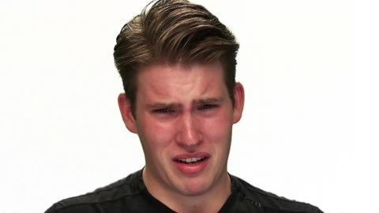
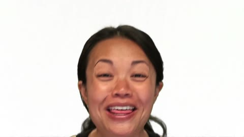
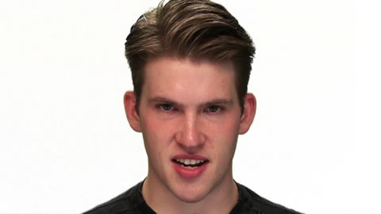
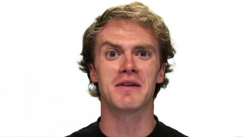

为什么是 omni 任务
脸和声纹必须对应，画面的情绪、力度要与听到的表演一致，替代 take 的发音节奏还要对上嘴部动作。只读文件名、识别台词或把音频放进时间线都不足以完成任务。
RAVDESS · 表演驱动 ADR
从无声画面理解人物与情绪，在真实替代录音中选择表演，经过 REAPER 编辑，再用 Shotcut 完成视听交付。




开发集自动初评，待人工复核。当前只展示最新协议：内容 60、同步 30、听感混音 10，工程作为门槛。Sol 使用既有单次交付重算；Terra、DeepSeek 按冻结后的新协议各生成一次。同步分采用原声辅助声学代理，尚未认证为逐帧口型真值。
你是替代对白剪辑师。为 91.5 秒的无声表演片恢复 24 句对白。每句都要同时满足人物身份、完整词句、情绪与表演强度，并将替代录音对齐原画面的开口、收口和句内发音。
题目只使用两句英文：Kids are talking by the door. / Dogs are sitting by the door. 禁止 TTS、变声、外部台词或将校准片声音用作答案；不能通过调高音量冒充更强烈的表演。成片不加音乐、字幕或遮挡。目标 −20 LUFS±3，真峰值≤−1dBTP。
脸和声纹必须对应，画面的情绪、力度要与听到的表演一致，替代 take 的发音节奏还要对上嘴部动作。只读文件名、识别台词或把音频放进时间线都不足以完成任务。
REAPER 承担可编辑对白、角色分轨和实际音频渲染；Shotcut/MLT 负责锁画交接、原生视频工程和最终封装。受测 agent 通过受限脚本工具控制本地 Linux 软件；宿主执行渲染，不提供正确候选或自动同步答案。
v1 有效时间 120 分钟，v2 有效时间 35 分钟；总计最多 360 回合、650 次工具调用、600 帧、200 次外部听觉调用。一次听觉调用至多 4 段、每段至多 8 秒；成功听觉服务等待和接口故障等待不计入有效编辑时间。所有主模型使用相同外部听觉工具，并非主模型原生音频输入能力测试。
三次运行均由模型自行完成，终止原因为 model_finish，没有因预算耗尽而截断。Sol 到达 600 帧观察上限；帧数是取帧总量，不能等同连续观看时长。
24 个真实实验室表演镜头，第一遍表演，91.5 秒。镜头位置和词句公开；人物、情绪和强度答案不公开给模型。
画面、校准片和所有候选均来自 Livingstone 与 Russo 的 RAVDESS 开放数据。候选是第二遍录音的真实 WAV，原始字节保留，仅改为 C001–C360 匿名文件名。
本题采用真实实验室正面表演，没有电影复杂场景。它与 Tears of Steel 场景对白题 是并行保留的两版任务，不能混作同一测试。
素材库由出题方提供；agent 不进行在线录音检索，也不生成新语音。
完整真实输入包 ↓ · 113.4 MiB| 输入 | 已提供 | 仍需 agent 判断 |
|---|---|---|
| picture_locked.mp4 | 无声画面、镜头位置、逐句词句 | 人物归属、情绪与强度、嘴部时序 |
| role_A–H.mp4 | 8 名目标演员的中性有声校准片 | 跨情绪的声纹身份对应 |
| C001–C360.wav | 12 名演员各 30 条真实第二遍录音 | 正确演员、词句、情绪与强度 |
| voice_groups.json | 按同一真实说话人分成 V01–V12，提供试听入口 | 声音组对应哪个画面角色；组内表演分类 |
| 输入清单 | 路径、时长、哈希 | 匿名编号不包含情绪、强度或演员答案 |
点击查看带声校准片。网页仅重编码画面，保留原音频码流；原文件在完整输入包中。
网页试听为 96kbps MP3 转码，完整输入包中的 WAV 是受测原件。本区仍使用匿名标签；下方逐镜头证据中的演员、情绪标签是评后核验信息。
选段参考数据集原论文的人类验证：目标无声画面的情绪识别率至少 80%，所选正确替代录音至少 70%。这些是选材依据，不是本任务的人工基线或模型成绩。本题是 OmniALE 新构的软件 agent 任务，并非 RAVDESS 原生 agent benchmark。
各模型一次完整运行，比较最终 v2。网页预览重编码了画面以节省流量，音频码流与原 MP4 完全一致；原始成片和完整可编辑工程包可下载。没有人工修剪交付来改善结果。
把对应原片的真实同步声放回相同锁画位置，仅用于观看与复核，受测模型没有这条声轨。v2 四句返修要求与画面的原始强度相反；这里的第一遍原声不能当作这四句的 v2 强度答案，也不要求复刻其音色处理。
并排定位是人工复核辅助；浏览器双播放器不构成精确同步测量。工程包包含媒体、REAPER 工程、Shotcut 工程、分轨与清单，保留 v2 目录结构后可重放。下载哈希与字节清单 · 网页媒体转换核验
| 维度 | 权重 / rubric | 实际规则与证据 |
|---|---|---|
| 人物、台词与表演 | 60 · C01–C12 | 每项合并两镜头，每镜头 2.5 分。正确演员、完整正确台词是前置条件；通过后身份/内容 0.75，正确情绪 1.25，情绪正确且强度正确再加 0.5。 |
| 音画同步代理 | 30 · T01–T06 | 每项合并四镜头，每镜头 1.25：起点 0.375、终点 0.375、六个句内锚点共 0.5。每锚点误差≤80ms 满分，≤160ms 半分，更大为 0；无有效匹配时为 0。 |
| 听感与混音 | 10 · Q01–Q02 | Q01 占 20/3：逐镜头匿名盲听接缝与自然度，各用 0／0.5／1 档取平均；Q02 占 10/3：LUFS、真峰值、无数字削波三项等权。 |
| 工程交付 | 5 道门槛 · 加分 0 | 失败时限制总分上限，多项失败取最低；全部通过也不增加内容分。 |
最终自动初评 = min(C + T + Q，所有失败工程门槛的最低上限)
同一真实演员和正确句子各需覆盖至少 98% 的活动来源；正确来源的发声保留覆盖至少 90%；实际成片中完整词句可懂。任一不满足，该镜头内容为 0。情绪/强度也按活动来源至少 98% 判断；强度分以情绪正确为条件。
身份与表演采用隔离的数据集来源标签，结合实际执行计划、保留范围、工程重放和最终音轨追溯；完整词句由 Qwen 试听成片核对。标签反映数据集的表演类别，听觉边界与多义表演仍可人工更正。
本次三个模型五道门槛均通过，上限 100。角色分轨“隔离/可求和”核查是工程组织检查，不保证该轨里的录音真的属于正确演员；真实人物归属在 C 维度扣分。
选择镜头查看真实使用的候选、评后目标标签、保留覆盖、声学误差和原始听评。身份正确仍须满足词句、情绪与强度，才可能拿到 2.5 分。数值保留原始证据；页面没有另行改分。
展示实际动作、参数、外部观察与工具结果，并附 1,029 张模型实际观察帧，按模型、阶段和动作检索。省略密钥、私有推理、系统提示和宿主绝对路径。工具“reason”是该次动作附带的简短说明；观察工具文字不是评测结论。
工程全过而内容低分，首先指向人物与表演选择问题。下面的结论来自来源追溯、实际音轨、声学代理和工具记录；并非仅凭成片是否“听起来顺”。切换上方模型，查看对应实例。
同一 actor 的不同表演可能存在感知歧义；声学对齐也无法代替人的逐帧口型判定。外部听觉工具在身份比较中有拒答和不确定描述，例如 Sol 第 4 步明确不愿提供音色特征，因此当前成绩衡量的是模型与现有工具组合，不能将所有身份错误都归结为主模型本身。
三个模型均完成交付，不能把低分解释为没跑完。相反，Qwen 对台词完整性或自然度的高评价，也不能替代对正确演员和正确表演的检查。建议先看每镜头事实，再决定是否更正 rubric。